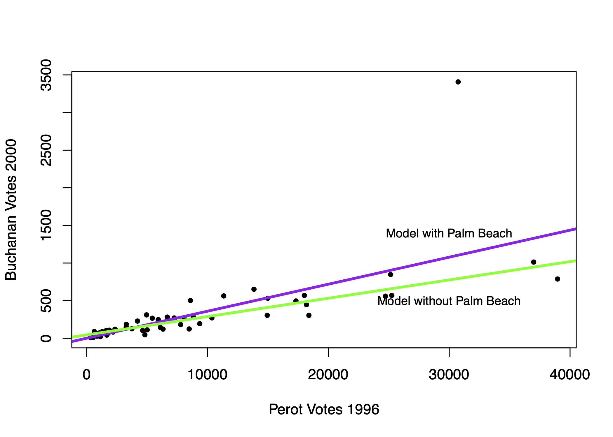
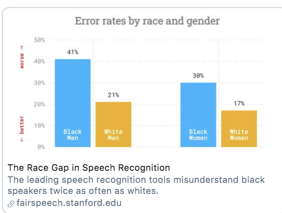

8.8 Cross-Validation
So far, we’ve been “cheating.” We’ve been analyzing a prediction in cases where we know the right answer. Now we will focus more squarely on how to develop an “out-of-sample” prediction.
Problem: Models that fit our existing (“in-sample”) data might not be the best for predicting out-of-sample data.
Example: Compare regression line with vs. without Palm Beach included in the sample.
- Outliers “in-sample” can lead to overfitting to weird, idiosyncratic data points

Example: Error Rates in Speech Recognition. See study here
- Predictions/Classification that works well for one group might not work well for all groups

Problem: Models that fit our existing (“in-sample”) data might not be the best for predicting out-of-sample data. Approaches to diagnose the problem or help address it:
- Detect potential outliers within existing data by exploring the prediction errors
- Make sure the training (in-sample) data is as representative as possible
- Incorporate out-of-sample testing in prediction process
8.8.1 Cross-Validation Process
Cross-validation incorporates the idea of out-of-sample testing into the process of how we evaluate the accuracy of prediction and classification approaches.
Cross-validation (train vs. test data)
- Subset your data into two portions: Training and Test data.
- Run a model based on the training data.
- Make a prediction and test the accuracy on the test data.
- Repeat process training and testing on different portions of the data.
- Summarize the results and choose a preferred model
- Eventually: Apply this model to entirely new data
Goal: Test accuracy in a way that can help detect overfitting. See how well our model will generalize to new data (data the model hasn’t seen).
8.8.2 Application: Forecasting Election Results
Macro political and economic fundamentals are sometimes used for early forecasting of an election. We will build a version of this model and test its accuracy using a process of “Leave-one-out” cross-validation.
Below is a video explainer of this application, which uses cross-validation.
The data and model are based on the FAIR model of forecasting.
fair <- read.csv("fair.csv")Key Variables:
VP: Democratic share of the two-party presidential votet: Year (presidential years only)G: growth rate of real per capita GDP in the first 3 quartersP: growth rate of the GDP deflator in the first 15 quarters of the recent administrationZ: number of quarters in the first 15 quarters of recent administration in which the growth rate of real per capita GDP is greater than 3.2 percent at an annual rateI: 1 if Democrats in WH and -1 if Republicans in WHWAR: 1 if 1920, 1944, 1948 (denoting the ``WAR” elections, which are believed to be particular)DUR: indicating how many consecutive terms Democrats/Republicans have been office (e.g., in 2020 it will be 0 because Republicans will have been in office for only 1 term.)
Let’s propose a model
fit <- lm(VP ~ DUR, data = fair)Let’s propose an alternative model and see which one we think is better.
fit2 <- lm(VP ~ G*I + DUR, data = fair)Note: The asterisk represents an “interaction.” See QSS Chapter 4. We use this when we think the effect of one variable (growth) may depend on the values of another variable (the party of who is in office).
8.8.2.1 Steps 1 and 2
We are going to run a model where each time we `leave out’ one row of data (in our case, one election). Let’s try this once:
years <- fair$t
## Step 1: Subset data into two portions
traindata <- subset(fair, t != years[1])
testdata <- subset(fair, t == years[1])
## Step 2: Run model on training data
fit <- lm(VP ~ DUR, data = traindata)
fit2 <- lm(VP ~ G*I + DUR, data = traindata)8.8.2.2 Step 3: Predict and assess accuracy with test data
Out-of-Sample prediction
## Step 3: Make a Prediction using test data and
yhat.fit <- predict(fit, testdata)
yhat.fit2 <- predict(fit2, testdata)Prediction error (Truth - Prediction)
## Step 3: Test accuracy of prediction
error.fit <- testdata$VP - yhat.fit
error.fit2 <- testdata$VP - yhat.fit28.8.2.3 Step 4: Repeat process across all data
Step 4: Let’s do this for each row, storing the prediction errors.
## Iteration vector
years <- fair$t
## Empty container vectors
errors.fit <- rep(NA, length(years))
errors.fit2 <- rep(NA, length(years))
## Loop (copy paste meat from above)
for(i in 1:length(years)){
traindata <- subset(fair, t != years[i])
testdata <- subset(fair, t == years[i])
fit <- lm(VP ~ DUR, data = traindata)
fit2 <- lm(VP ~ G*I + DUR , data = traindata)
yhat.fit <- predict(fit, testdata)
yhat.fit2 <- predict(fit2, testdata)
errors.fit[i] <- testdata$VP - yhat.fit
errors.fit2[i] <- testdata$VP - yhat.fit2
}8.8.2.4 Step 5: Summarize performance
Step 5: Summarize the model performance
## RMSE
sqrt(mean((errors.fit)^2))## [1] 7.170149sqrt(mean((errors.fit2)^2))## [1] 3.793135## Mean Absolute Error
mean(abs(errors.fit))## [1] 5.937542mean(abs(errors.fit2))## [1] 3.363163Which model tends to have less error?
8.8.2.5 Applying Model to New Data
Eventually, you might further test the model on data that has been “held out”– data that neither your train/test has seen. How good was our model? We can do this for the 2016 election, which was not in the data.
Truth: 2016 VP was 51.1 Democratic “two-party” vote share.
## Let's use the winner of our two models
fit2 <- lm(VP ~ G*I + DUR, data = fair)
51.1-predict(fit2, data.frame(G=0.97, I=1, DUR=1))## 1
## 2.4721472016 values based on the FAIR site
8.8.2.6 Challenge
Can you build a better model? What would your prediction for 2020 be?
- -5.07: growth rate of real per capita GDP in the first 3 quarters of 2020 (annual rate) (G)
- 1.80: growth rate of the GDP deflator in the first 15 quarters of the Trump administration, (annual rate) (P)
- 3: number of quarters in the first 15 quarters of the Trump administration in which the growth rate of real per capita GDP is greater than 3.2 percent at an annual rate (Z)
- DUR=0
- I = -1
Values based on the FAIR site